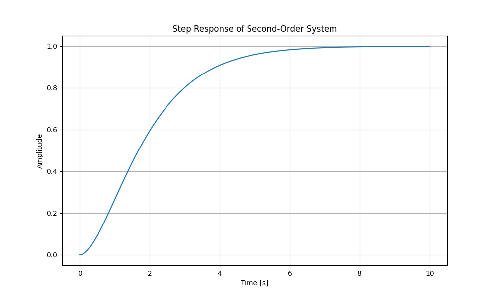
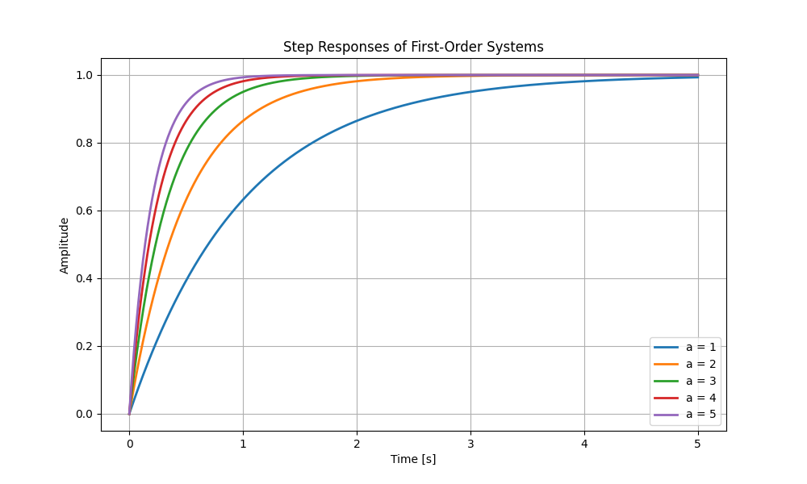

Learn the fundamentals of using Python for control system analysis and design.
Variables in Python are dynamically typed and easy to work with:
x = 123.3 # float
x = "Some text" # string
x = True # booleanSymPy enables symbolic mathematics, which is crucial for control system analysis. For example, we can solve the quadratic equation:
Or simplify trigonometric identities like:
The control library lets us work with transfer functions and analyze system responses. For example, consider a second-order system:
import control
import numpy as np
import matplotlib.pyplot as plt
# Create transfer function
num = [1]
den = [1, 2, 1]
G = control.TransferFunction(num, den)
# Plot step response
t = np.linspace(0, 10, 1000)
t, y = control.step_response(G, t)
plt.plot(t, y)
plt.grid(True)
plt.show()The resulting step response plot:
Let's compare first-order systems with different time constants. The transfer function form is:
where \(a\) is the inverse of the time constant \(\tau = \frac{1}{a}\).
